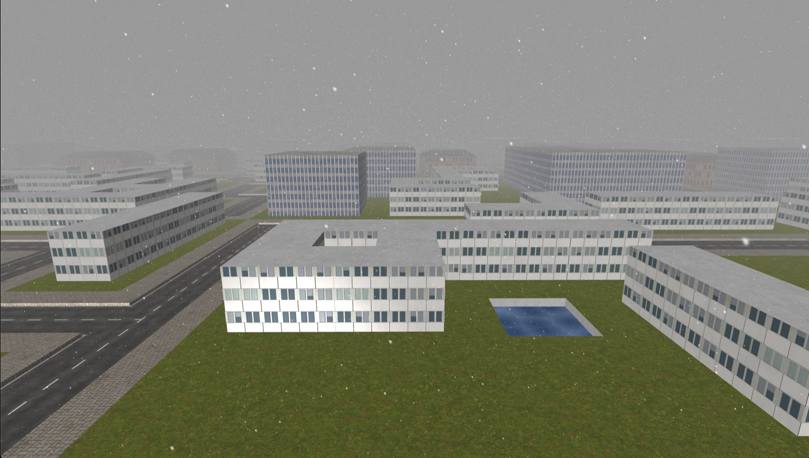
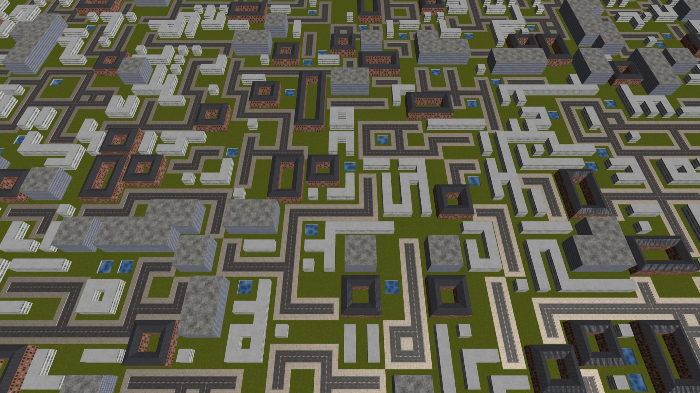

Spring 2024 · Computer Graphics course
Procedural City
An interactive 3D city generated from scratch, with dynamic weather and lighting, rendered in real time in the browser.
- EPFL, Lausanne
- Code on GitHub
Overview
The city layout is generated procedurally, then rendered with custom shaders for atmosphere and weather. The scene includes more than one million GPU-accelerated snow particles running in real time on mid-range GPUs.
Key features
Wave Function Collapse
17 hand-modelled Blender tiles, with automatic rotation and matching, and instanced rendering for efficient city generation.
Snowfall
1M+ GPU particles in real time on mid-range hardware.
Atmospheric fog
Depth-based blending that gives the city a sense of scale.
Normal mapping
Detailed building façades without extra geometry.
Procedural water
Ripples generated with cellular noise.
Asset pipeline
Modular assets designed in Blender and exported for the WebGL engine.
Gallery

